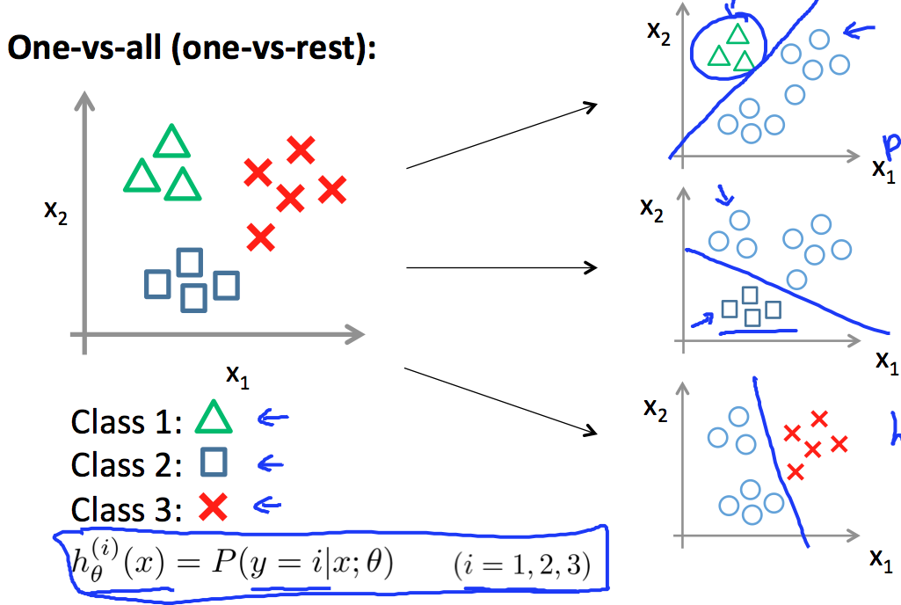

问题描述
许多分类器主要是为了解决二分类问题，比如Logistic回归和SVM，用1和0两个类别标签表示属于或不属于某个类别（而属于另一个类别）。多分类问题是对两个以上类别标签的数据集分类。常用的方法有：
- 多个二分类器的组合；
- 直接采用多分类器。
one-vs-all

one-vs-all也叫one-vs-rest。
可用one-vs-all策略组合Logistic回归解决多分类问题：
- 针对每一类$i$训练一个Logistic分类器$h_\theta^{(i)}(x)$，这是第$i$类与其它类别的二分类问题；
- 新输入$x$所属的类别满足$\max_ih_\theta^{(i)}(x)$（属于概率最大的那个类别）。
神经网络是扩展的 one-vs-all 方法。